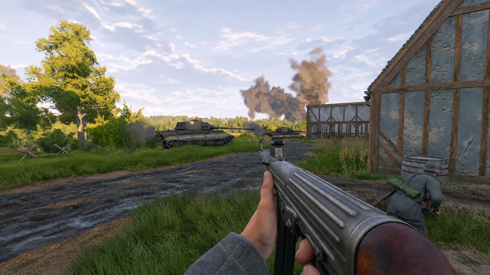

Gameplay
Learn the basic mechanics and how the different game modes work.
Explore gameplay
Learn the basics and head into battle with confidence.
The Enlisted Field Guide is a fan-made resource for players learning the game or just looking to improve. Explore the game's core mechanics and advice to perform better in matches. Whether you're choosing equipment or exploring the maps each front has to offer, you'll find a place to start here!
Learn the basic mechanics and how the different game modes work.
Explore gameplayGet familiar with the tech tree's many weapons and vehicles.
Browse equipmentLearn what each class has to offer and their available perks.
Soldier classes overviewDiscover the different fronts and environments you'll fight in.
Explore the mapsFind practical advice and useful links for more information.
View resources and tips